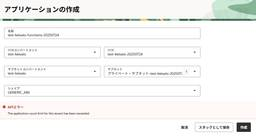
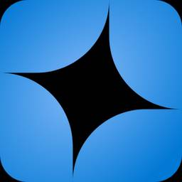
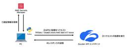
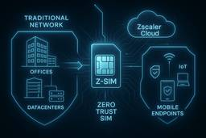

APC 技術ブログ
https://techblog.ap-com.co.jp/
株式会社エーピーコミュニケーションズの技術ブログです。
フィード

GitHub Rate Limitを考慮した Backstage の設定
APC 技術ブログ
みなさんこんにちは。ACS事業部 Backstage Enthusiast の亀崎です。 今回のテーマは Backstage 。Backstageについては、これまで数年にわたって何度もご紹介していますので皆さんご存知ですよね？？ もし万が一ご存知ないという方がいましたらまずは以下の記事をご覧になってください。 techblog.ap-com.co.jp ソフトウェアカタログの登録更新処理 Backstageの一番の機能はソフトウェアカタログです。そのソフトウェアカタログの情報は GitHub 等のリポジトリに作成・保管しておくものです。 今回はソフトウェアカタログの登録更新処理にフォーカスし…
5時間前

【AWS】Amazon Cognito ユーザープール OIDCプロバイダー設定
APC 技術ブログ
目次 目次 はじめに 前準備 UserPoolの作成 カスタムドメイン設定 auth0設定 userpool設定 動作確認 まとめ お知らせ はじめに こんにちは、クラウド事業部の上村です。 CognitoユーザプールとOIDC連携設定をやってみようとおもいます。 前準備 ・auth0 無料プラン UserPoolの作成 まずはUserPoolを作成します。 カスタムドメイン設定 こちらは必須ではないですが、カスタムドメインを試したいのでこちらも設定していきます。 事前にRoute53に下記を設定しております。 ・ホスト名 example.com ・レコード名 example.com Aレコー…
2日前

【OCI】サービス制限(Service Limits)について確認してみる
APC 技術ブログ
はじめに こんにちは。クラウド事業部の佐藤です。 OCIの勉強のためにOCI Functionsを作成してみようとしたところリソースのサービス制限(Service Limits)にまつわるトラブルが発生したので、サービス制限について調査してみました。 もともとやろうとしていたこと OCI公式のドキュメントに従ってOCI Functionsを作成しようとしていました。(閲覧日：2025年7月24日) docs.oracle.com 起きたこと OCI Functionsの「アプリケーションの作成」において、正しい名前・コンパートメント・VCN・サブネットを選択しているにも関わらず、「APIエラー…
2日前

VS Code で Cline を試そうとしただけなのに、いつのまにか Azure OpenAI を探索していた話
APC 技術ブログ
はじめに Azure OpenAI と衝撃のトークン数 Azure OpenAI ログ収集、しかし… Azure API Management 導入へ 一難去って、また一難 念願のログ出力！！ おわりに お知らせ はじめに Amazon Bedrock と VS Code (Cline) で AI コーディングを始めようとした、とある日のことでした。 普段使っている社内の AWS 環境では Bedrock への API アクセス権限が付与されていなかったため、急遽、社内の Azure 環境で試してみることにしたんです。これが、思わぬ方向へ進むことになった「事の発端」でした。 Azure Ope…
5日前

【Zscaler】Zscaler OneAPIを利用してポリシーを作成してみた
APC 技術ブログ
ZscalerではOneAPI(以下、API)経由でポリシーの作成や変更、削除を行うことが可能です。 今回はAPIを利用してZscaler Internet Access(以下、ZIA)の機能であるURLフィルタリングのポリシーを作成したので手順をご紹介します。
5日前

【OCI】OCI Network Firewall を使ってみる
APC 技術ブログ
目次 目次 はじめに どんなひとに読んで欲しい 関連記事 Network Firewallとは 料金 手順 1. ネットワークの構築 2. Network Firewallの作成 3. テストWebページ用のコンピュートインスタンスの作成と設定 4. Firewallを経由するためのルーティング設定 5. Network FirewallのIDP機能を確認する おわりに お知らせ はじめに こんにちは、クラウド事業部の松尾です。 OCIにはfirewall機能のサービスとして「Network Firewall」と「Web Application Firewall」があります。 （セキュリティリ…
5日前

【Zscaler】ラストワンマイルは“SIM”が制する？Zscaler Z-SIMが拓くゼロトラストの次なる一手
APC 技術ブログ
ラストワンマイルの変化 こんにちは、エーピーコミュニケーションズ 0-WANの山根です。 近年、企業ネットワークの構築において「ラストワンマイル」、つまりエンドポイントとネットワークの接続部分の在り方が大きく変わりつつあります。 従来はオフィスLANやVPNを前提としたモデルが主流でしたが、テレワークやIoTデバイス、クラウドの拡大により、“どこからでも安全につながる”ことが前提となる世界に移行しています。 本記事では、通信そのものにセキュリティを統合するという発想から生まれた「Z-SIM」について紹介しつつ、これが今後のラストワンマイルをどう変革するか、私なりの考察をまとめてみたいと思います…
6日前

【AWS】AWSが開発したAI IDEのKiroを使ってCloudFormationファイルを生成してみる
APC 技術ブログ
こんにちは、クラウド事業部の山路です。 今回は2025年7月14日にプレビュー版がリリースされたKiroを使ってみました。KiroはAWSの開発したAI IDEなので、ここではAWSリソースの要件定義からCloudFormationファイルの生成までを試しました。 なお、私はこれまでCursorなどのAI IDEやClaude Codeなどは触ったことがなく、普段はGeminiやChatGPTといった対話型AIのチャット機能を使っています。今回は使ってみた使用感や感想をメインに紹介しますが、このあたりを前提に読んでいただければ幸いです。 kiro.dev Kiroとは Kiroはトップページで…
9日前
【AWS】AWS Summit Japan 2025 (1日目) に参加してきたので、それとなく感想を書く(セッション編)
APC 技術ブログ
目次 目次 はじめに 視聴したセッション 生成 AI のためのデータ活用実践ガイド 生成 AI を活用したデータベースのスキーマ変換で移行を加速しよう : AWS Database Migration Service Schema Conversion Amazon S3 によるデータレイク構築と最適化 おわりに お知らせ はじめに こんにちは、クラウド事業部の坂口です。 タイトルにもある通り、AWS Summit Japan 2025 に参加してきました。 今年の参加日は種々の都合で 6/25(水) の1日目のみ。 そんな中で幸いにも聴くことができたブレイクアウトセッションについて、感想を書…
11日前
【Okta】Okta Identity Summit 2025参加レポート：Entra IDとの違い、Non-Human Identity管理、Identity Fabricとは？
APC 技術ブログ
Okta最新戦略まとめ：Entra IDとの違い、Non-Human Identity管理、Identity Fabricとは？ Okta Identity Summit Tokyo 2025 参加レポート 目次 自己紹介 はじめに：イベントの概要と参加セッション プロダクトセッション：Okta の進化と未来（里見氏セッション） 3.1 Identity is Security — 認証の枠を超えたセキュリティ戦略 3.2 Entra IDとの違いと共存：競合ではなく補完関係 3.3 Non-Human Identity（NHI）への拡張 Okta Japan FY26 パートナー戦略（竹内氏…
12日前
【AWS】Amazon InspectorでECRにあるコンテナイメージと起動中のECSタスク上のコンテナを紐づける
APC 技術ブログ
こんにちは、クラウド事業部の山路です。 今回は2025年5月にリリースされたAmazon Inspectorの機能を調査しました。本機能により、Amazon ECRに格納されたイメージのうち、Amazon ECS / EKSで起動中のものを検出可能となります。 aws.amazon.com 機能概要 Amazon InspectorはAmazon EC2 / ECR / AWS Lambdaを対象に、パッケージの脆弱性や意図しないNW露出領域を継続的なスキャンで検出する脆弱性管理サービスです。これまでAmazon ECRに格納されたイメージに対する脆弱性スキャンは利用可能でしたが、5月のアップ…
12日前
【AWS】AWS Summit 2025に参加しました！
APC 技術ブログ
目次 目次 はじめに イベントの概要 会場の雰囲気 基調講演 セッション紹介 “後発優位”で挑んだ「いい部屋ネット」再構築： 4 年間のAWS 移行で実現した成果とその舞台裏 展示紹介 Anthropic社の展示 おわりに お知らせ はじめに こんにちは、クラウド事業部の山下です。 昨年に引き続き、2025年6月25日にAWS Summitに参加してきました。 少し時間が空いてしまいましたが、会場の雰囲気や気になった展示・セッションについて振り返りつつ紹介したいと思います。 イベントの概要 イベント名：AWS Summit 2025 開催日：2025年6月25日-26日の2日間 会場：幕張メッ…
13日前
【Zscaler】FY25 Zscaler Partner Top Sales Tour in OKINAWA参加レポート！
APC 技術ブログ
FY25 Zscaler Partner Top Sales Tour に参加しました!! こんにちは、エーピーコミュニケーションズ 0-WANの山根です。 このたび、Zscaler社主催のパートナー向け特別イベントにご招待いただき、参加してまいりましたので、その様子をレポートいたします！！ 那覇空港にて撮影 FY25 Zscaler Partner Top Sales Tourとは？ Zscaler社が主催する国内パートナー向け特別イベントです。 国内150社以上のパートナーの中からZscaler社のビジネスに貢献した上位数社が招待されています。前回に引き続き、ありがたいことに今回も参加の機…
13日前
AWS Summit 2025 の見どころを簡単に振り返る！
APC 技術ブログ
はじめに こんにちは！ クラウド事業部の升谷です。 AWS Summit に今年も参加することができました！ 盛り上がった二日間の内容を私の独断と偏見で ぎゅぎゅっとあっさり5分にまとめました！ 残念ながら参加ができなかった方や、 簡単に振り返りたい方に読んでいただけると幸いです。 JAWS-UG 朝会でLTをしました！ 同じ内容で、LTをしてきました！ jawsug-asa.connpass.com JAWS-UG 朝会への参加は久しぶりだったのですが、 早起きしてインプットとアウトプットができる、 自己肯定感が上がる良いイベントだなあと改めて感じました！ スライド形式でサクッと確認したい方…
16日前
Terraform のポリシー機能、 Sentinel と OPA を比較しながら始めてみる
APC 技術ブログ
はじめに ACSD 安藤です。 Terraform を大規模で使っていくと、一人二人といった少人数のインフラ担当だけで Terraform を書いていくことが大変になり、ある程度の規模のインフラチームもしくは開発チームにも Terraform の書き手を広げていく必要が出ていきます。 そうなると、人によって書きっぷりが違ってしまったり、組織としての標準的な設計から逸脱したリソースやパラメータが設定されてしまうリスクも拡大していき、最近ではある程度 AI が活用でき始めたとはいえ人力でのレビューのコストも増えていきます。 そんな事態に対処するためにはポリシーやガードレールといったものを整備するの…
17日前
【OCI】OCI Identity domainがなぜリージョナルサービスなのか推測してみる
APC 技術ブログ
こんにちは、クラウド事業部の山路です。 今回は先日OCIの資格試験の受験に向けて勉強していた時に気になった、Identity domainがリージョナルサービスである理由について調べてみました。 なお、私が見た限り「Identity domainがリージョナルサービスである理由」が明言された公式ドキュメントなどは見つかりませんでした。そのため本記事では、OCIの公開しているドキュメントやブログを見たうえで「推測」した理由を記載する形にしています。あらかじめご了承ください。 前提: OCI Identity domainとは OCI Identity domainはOCIのIDaaS (Iden…
17日前
【OCI】コンピュート・インスタンス(Linux)からObject Storageの操作をするまで
APC 技術ブログ
目次 目次 はじめに 概要 前提条件 手順 アクセス先のObject Storageとアクセスのための設定 OCI CLIインストールと事前設定 Object Storageにファイルアップロード Object Storageからファイルダウンロード おわりに お知らせ はじめに こんにちは、クラウド事業部の齋藤です！ コンピュート・インスタンスからObject Storageにファイルのアップロードやダウンロードするのってどうやってやればいいの？を調べる機会があり、実際にやってみました！ いろいろと設定箇所があり迷ったところがあったので、一連の流れを書いていきます。 概要 前提条件 以下が完…
19日前
【OCI】OCIにおけるAWSからの代替サービスを一覧にまとめてみた
APC 技術ブログ
はじめに こんにちは！エーピーコミュニケーションズ クラウド事業部の髙野です。 今までAWSを中心に勉強してきた私ですが、先日、OCIの認定資格 「OCI 2024 Architect Associate (1Z0-1072-24)」 を取得しました！ まだまだ勉強中の身ではありますが、本ブログでは、自分用のチートシートとして活用するためにも、OCIにおけるAWSからの代替サービスを一覧にまとめました。あわせて、各章でOCIサービスの簡単な説明もしています。 それぞれのサービスの機能が完全に一致するわけではなく、あくまで 「おおよそ似たようなことができる」「複数のサービスを組み合わせることで代…
20日前
【OCI】オブジェクトストレージからAutonomous Databaseへデータのロードをやってみた
APC 技術ブログ
はじめに こんにちは！クラウド事業部の志賀です。 クラウドのデータ活用において、オブジェクトストレージに格納したファイルを利用することがあると思います。 学習の一環として、その時はどうすればオブジェクトストレージからAutonomous Database (以降、ADB)にデータをアップロードができるか気になって実際に手を動かしてみました。 今回はOCIのチュートリアルを基にその手順や気になったことをご紹介したいと思います。 ロードに必要な準備 ADBを作成済であること（チュートリアル参照） （本記事で紹介している内容はOCI Always Free リソース内で実施しています。） ロード手順…
22日前
【OCI】OracleLinux9にTeratermからサクッと接続する
APC 技術ブログ
OracleCloud はじめに 事前準備 概要 原因 対処 まとめ おわりに はじめに こんにちは、株式会社エーピーコミュニケーションズ クラウド事業部の塩田です。 Oracle Cloud Infrastructure 2024 Certified Architect Associateを勉強するにあたり、 インスタンスのTeraterm接続でいきなりハマった箇所と対処手順を共有します。 事前準備 インターネットと接続できるPC OCIアカウント ※アカウント作成の参考記事：【OCI】Oracle Cloud Infrastructure（OCI）アカウントのつくりかた - APC 技術ブ…
22日前
【AWS】AWS Summit 2025のEXPOで聞いた話まとめ！
APC 技術ブログ
はじめに こんにちは。エーピーコミュニケーションズ クラウド事業部の髙野です。 2025年6月25日、26日に幕張メッセで開催されたAWS Summitへ参加してきました。 今年は6/25のみの参加で、残念ながら到着が遅れてしまったため、セッションはほとんど見られませんでした。そこで、時間を最大限に活用してEXPOエリアをじっくり見て回ることに専念しました！ 本ブログでは、立ち寄ったEXPOブースのうちのいくつかを紹介します。 目次 EXPOとは Amazon Q Business と Amazon Q in QuickSightで仕事の進め方を変える AWS re:Inforce 2025 …
23日前
【登壇レポート】JAWS-UG AI/ML #27：Generative AI / ML LT大会で登壇しました。
APC 技術ブログ
こんにちは、クラウド事業部の田島です。 2025/06/23に開催されたJAWS-UG AI/ML #27：Generative AI / ML LT大会で「生成AIでwebアプリケーションを作ってみた」というテーマで登壇させていただきました。 JAWS-UG AI/ML #27：Generative AI / ML LT大会 - connpass 残念ながらまだアプリケーションは完成していませんが、作成していく中で良かった点や、大変だった点について話しました。 生成AIの仕組み上の問題で、これから精度が上がってもセキュリティが担保されているかをどのように確認していくのかが課題になりそうです。…
23日前
【AWS】Amazon EKS Node Monitoring AgentによるNode自動復旧を試してみる
APC 技術ブログ
こんにちは、クラウド事業部の山路です。今回は昨年末ごろにリリースされたAmazon EKSのNode自動復旧機能 (本記事ではAuto repairと呼んでいます) について紹介します。 aws.amazon.com EKS Auto repairとは EKS Auto repairはWorker node上に問題が発生した際に、自動的にNodeを復旧する機能です。具体的にはNodeをモニタリングするエージェントとして Node Monitoring Agent (NMA) をクラスターにインストールし、エージェントが障害を検知したら新規Nodeの作成と再配置または再起動を実行します。 aws…
23日前
【AWS Summit Japan 2025】初参加してきたので雰囲気やセッションの感想レポート！！
APC 技術ブログ
こんにちは、クラウド事業部の齋藤です！ 先日6/25(水)、6/26(木)の2日間にわたり幕張メッセで開催されたAWS Summit Japan 2025に現地参加してきました。 AWS Summit Japanは初めての参加だったのですが、とても良い経験になりました。 今後同じように初めて行くよ～という方に参考になればと思い会場の雰囲気や感想を書いていきます。 1日目については全体的な雰囲気について、2日目については印象に残ったセッションについて記載していきます！ 1日目
24日前
DATA+AI Summit2025（DAIS2025）に関する投稿まとめ（現地時間2025年6月12日分）
APC 技術ブログ
はじめに エーピーコミュニケーションズでは現地参加メンバーと日本から視聴するメンバーで連携しDATA+AI SUMMIT2025に関するポータルサイトを展開し、イベントに関する情報をお届けしています。是非ともこちらの特設サイトのチェックもよろしくお願いいたします！ 2025年6月12日 Data +AI Summit 投稿一覧 AirflowからLakeflowへ？Databricksが示すデータワークフロー近代化の選択肢 - APC 技術ブログ Databricks Unity Catalogで実現する、次世代のApache Iceberg活用術 - APC 技術ブログ チャットボットの先へ…
24日前
DATA+AI Summit2025（DAIS2025）に関する投稿まとめ（現地時間2025年6月11日分）
APC 技術ブログ
はじめに エーピーコミュニケーションズでは現地参加メンバーと日本から視聴するメンバーで連携しDATA+AI SUMMIT2025に関するポータルサイトを展開し、イベントに関する情報をお届けしています。是非ともこちらの特設サイトのチェックもよろしくお願いいたします！ 2025年6月11日 Data +AI Summit 投稿一覧 Databricks Lakeflow本格運用ガイド：CI/CD、テスト、監視をスケールさせる新手法 - APC 技術ブログ DSPy 3.0登場：プロンプトエンジニアリングを「職人技」から「ソフトウェア工学」へ - APC 技術ブログ 金融機関におけるAzure Da…
24日前
DATA+AI Summit2025（DAIS2025）に関する投稿まとめ（現地時間2025年6月10日分）
APC 技術ブログ
はじめに エーピーコミュニケーションズでは現地参加メンバーと日本から視聴するメンバーで連携しDATA+AI SUMMIT2025に関するポータルサイトを展開し、イベントに関する情報をお届けしています。是非ともこちらの特設サイトのチェックもよろしくお願いいたします！ 2025年6月10日 Data +AI Summit 投稿一覧 Databricks AI/BI GenieとTeamsの連携：チャットで実現する次世代のセルフサービスBI - APC 技術ブログ Globe TelecomのMLOps刷新：Databricks統合で処理時間28倍・コスト97%削減を実現した全貌 - APC 技術ブ…
24日前
DAIS2025参加レポート：サンフランシスコ出張
APC 技術ブログ
はじめに GDAI事業部Lakehouse部の鄭(ジョン)です。今年もDatabricksの最新技術情報をいち早くキャッチするため、アメリカ・サンフランシスコで開催された Data + AI Summit 2025（以下DAIS） に参加してきました。 弊社ではDAISのセッションをレポートしており、以下の特設サイトからセッションごとの解説ブログを参照できます。 ブログの記事は、Data + AI Summit のセッションを現地で視聴したエンジニアが、内容をできる限り客観的に共有することを目的に、生成AIを活用して作成したものです。 生成AIを活用して作成した記事であることも踏まえつつ、AI…
25日前
【OCI】資格勉強で一番記憶に残ったこと～保存データの暗号化～
APC 技術ブログ
クラウド事業部の西村です。 先日、Oracle Cloud InfrastructureのArchitect Associateに合格しました。 試験には王道のOracle MyLearnを利用したのですが、 資格勉強とは別に、記憶に残っていることがあります。 それは… OCIはデフォルトで保存データはすべて暗号化している ということです。 この内容が記憶に残った理由としては、私が内部統制に興味を持っており、ISMAPにおける保存データの暗号化が重要項目の一つであるからです。 ■ISMAPとは OCIはISMAPクラウドサービスリストに登録されています。 ISMAPクラウドサービスリスト - …
25日前
【AWS Summit Japan 2025】QuizKnockの方と早押し対決をしました。
APC 技術ブログ
はじめに こんにちは、クラウド事業部の田島です。 AWS Summit Japan 2025の1日目の18:10から行われた「QuizKnock に挑め！AWS 早押しクイズ対決。」に参加しました。 QuizKnock - AWS Summit Japan | 2025 年 6 月 25 日（水）、26 日（木） 概要 6 月 25 日（水）18:10 ごろより基調講演会場で AWS に関連したクイズ大会の実施が決定しました。伊沢 氏、須貝 氏、 falcon 氏、Ziphil 氏が登壇し、ご来場の皆様とクイズ大会を行います。クイズ大会はセッション登録不要でご参加いただけます。 全員が参加でき…
25日前